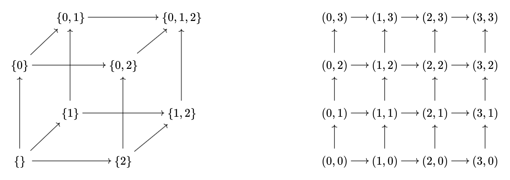

Let $P$ be the poset which is the powerset of $\{0,1,2\}$ ordered by inclusion, and for a natural number let $Q_n$ be the poset whose underlying set is $\{0,1,\ldots,n-1\}$ ordered by componentwise comparison, i.e. the relation $(a_1,b_1)\leq(a_2,b_2)$ iff $a_1\leq a_2$ and $b_1\leq b_2$. The posets $P$ and $Q_n$ can be visualized as a $2\times 2\times 2$ cube and an $n\times n$ square respectively. Below are Hasse diagrams (as directed graphs) for $P$ and $Q_4$.
\ Is there an $n$ such that there is an order preserving injection of $P$ into $Q_n$?
It turns out that the answer is no.
The notion of the order dimension of a poset $(R,\prec)$ has two equivalent definitions: (both from Wikipedia)
This has implications in some of my attempts to get a model-theoretic proof of independence of the finite adjacent Ramsey theorem.